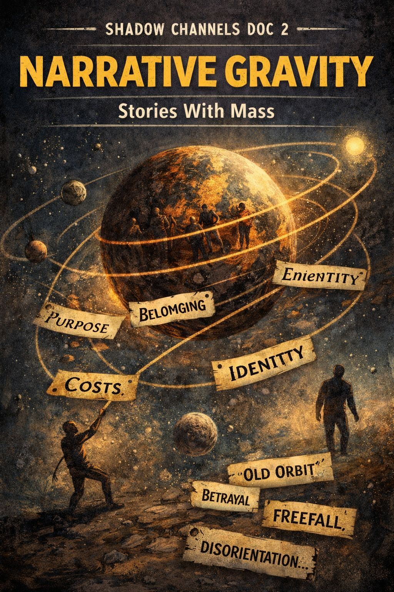

SHADOW CHANNELS DOC 2

NARRATIVE GRAVITY
Stories With Mass
What It Is
Some identities behave like shirts.
Try them on, take them off, no drama.
Other identities behave like planets.
Once you fall into their orbit, they shape your movement, speech, loyalty, and worldview.
Narrative Gravity is the pull exerted by a story big enough to:
- define your role
- explain your life
- choose your enemies
- and tell you what “we” do here
You don’t just believe it.
You belong to it.
Why It Matters
Identity panic isn’t random.
It’s what happens when a person feels the weight of a story they no longer fully fit inside.
The old orbit becomes:
- too tight
- too hot
- too small
- too scripted
But breaking orbit feels like:
- betrayal
- freefall
- cosmic disorientation
- no up, no down
- no tribe
- no home field
So people cling longer than they need to.
Where It Shows Up
Narrative Gravity is working when someone says:
- “This is just how we’ve always done it.”
- “Our people don’t behave like that.”
- “I could never leave.”
- “I owe them.”
- “If I walk away, who am I?”
It appears in:
- politics
- religion
- subcultures
- sports loyalty
- career identity
- family legacy
- neighborhood codes
- AA and recovery circles
- local myths (“Greeneville folks are…”)
- even fandoms
Wherever a story becomes a container for self.
The Deep Structure
Strong identity stories offer:
- purpose
- belonging
- clarity
- shield against uncertainty
But every story has:
- edges
- limits
- tolls
- blind spots
- and sometimes expiration dates
When a person senses they’ve outrun the story, gravity turns from comfort to constraint.
The Physics of Leaving
To exit a heavy story, you need:
- thrust
- courage
- support
- alternate belonging
- a reason stronger than loss
- sometimes a crisis
- sometimes a whisper
Leaving produces:
- guilt
- grief
- nostalgia
- rage
- exile
- freedom
In that order or scrambled.
Healthy Questions
- Does this story still fit who I am becoming?
- Do I stay from loyalty or fear?
- What truth am I hiding to avoid escape velocity?
- Whose voice keeps me in orbit?
- If I set foot outside this story, who would still care about me?
Early Signs of a Gravity Shift
You catch yourself:
- holding different values
- questioning assumptions
- feeling like a visitor
- saying “we” less and “I” more
- daydreaming escape
- thinking thoughts you don’t announce yet
Gravity weakens one centimeter at a time.
Application: One-Sentence Tool
“A story that can’t survive my full honesty isn’t big enough for me.”
Shadow Channel Link
Narrative Gravity fuels:
- Norm Debt (the price to stay in orbit)
- Audience Capture (who’s watching from the mother planet)
- Exit Wounds (scorch marks from re-entry)
Permission Cascades begin when one person leaves the orbit and others suddenly see the sky.
Landing Reflection
If I stop orbiting this story, where would my life drift next?
Index of Shadow Channels
← Back to Index